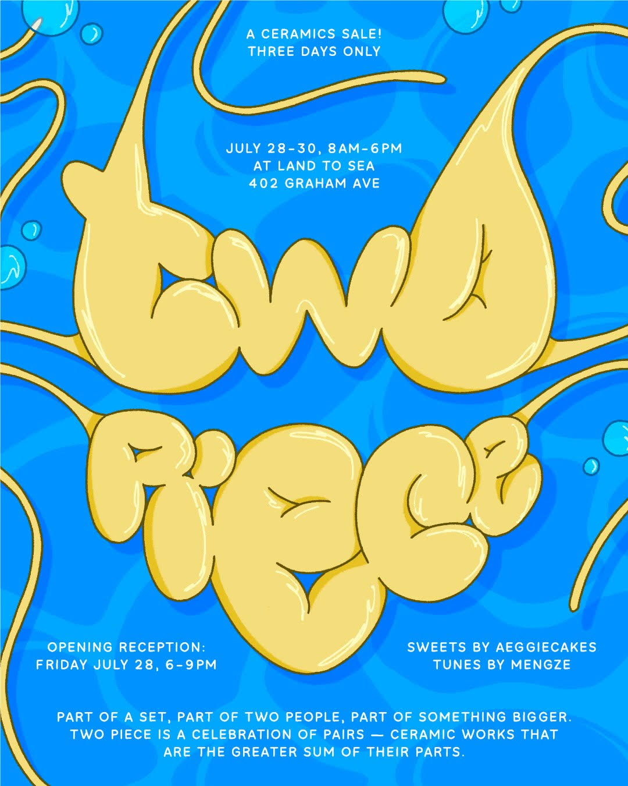
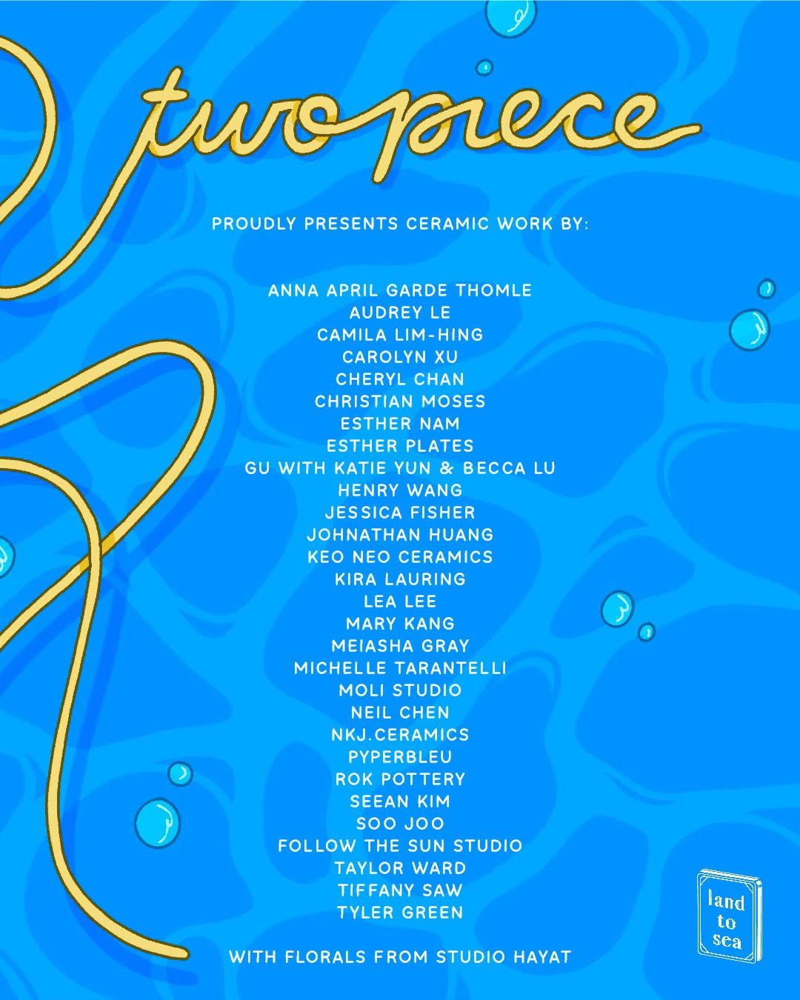
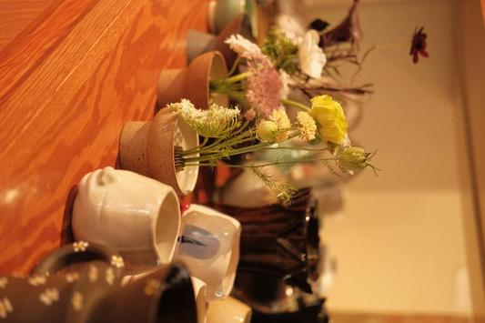
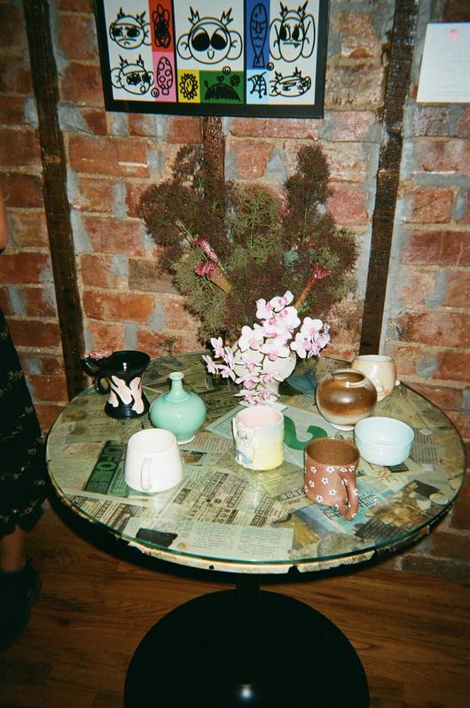
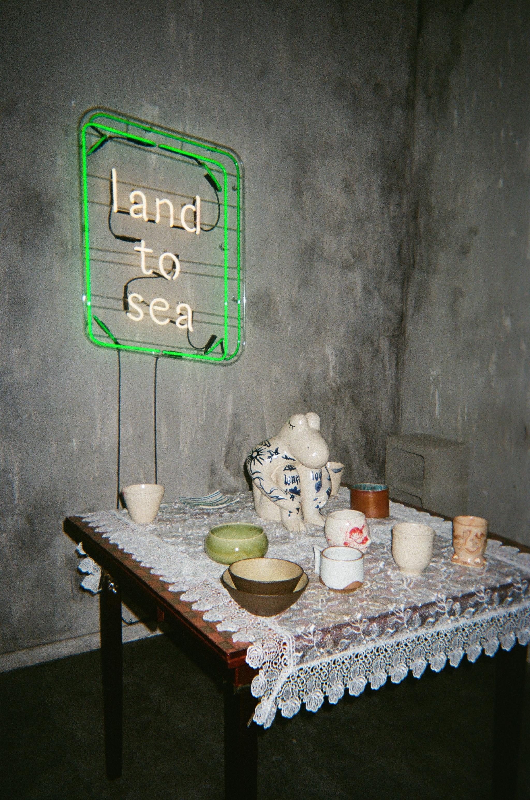

Organized by Gu and Kira Lauring, "Two Piece" showcased ceramics works from both domestic and international artists 6/28 - 6/30 2023 at Land to Sea in Brooklyn NY.
Two Piece: “Part of a set, part of two people, part of something bigger. Two piece is a celebration of pairs — ceramic works that are greater than the sum of their parts.”
Participating artists:
Kira Lauring, Kaitlin Gu with Katie Yun and Becca Lu, Anna April Garde Thomle, Audrey Le, Camila Lim-Hing, Carolyn Xu, Cheryl Chan, Christian Moses, Esther Nam, Esther Plates, Henry Wang, Jessica Fisher, Johnathan Huang, Keo Neo Ceramics, Lea Lee, Mary Kang, Meiasha Gray, Michelle Tarantelli, Moli Studio, Neil Chen, NKJ.Ceramics, Pyperbleu, Rok Pottery, Seean Kim, Soo Joo, Follow the Sun Studio, Taylor Ward, Tiffany Saw, Tyler Green.
Special thanks to Eva Zhou and Emily Shum of Land to Sea. Photos by Savannah Lim.




